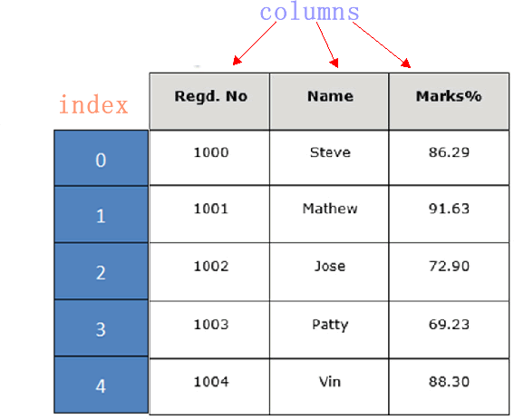

Pandas DataFrame入门教程（图解版）
DataFrame 是 Pandas 的重要数据结构之一，也是在使用 Pandas 进行数据分析过程中最常用的结构之一，可以这么说，掌握了 DataFrame 的用法，你就拥有了学习数据分析的基本能力。

表格中展示了某个销售团队个人信息和绩效评级（rating）的相关数据。数据以行和列形式来表示，其中每一列表示一个属性，而每一行表示一个条目的信息。
下表展示了上述表格中每一列标签所描述数据的数据类型，如下所示：
DataFrame 的每一行数据都可以看成一个 Series 结构，只不过，DataFrame 为这些行中每个数据值增加了一个列标签。因此 DataFrame 其实是从 Series 的基础上演变而来。在数据分析任务中 DataFrame 的应用非常广泛，因为它描述数据的更为清晰、直观。
通过示例对 DataFrame 结构做进一步讲解。 下面展示了一张学生成绩表，如下所示：
DataFrame 结构类似于 Execl 的表格型，表格中列标签的含义如下所示：
同 Series 一样，DataFrame 自带行标签索引，默认为“隐式索引”即从 0 开始依次递增，行标签与 DataFrame 中的数据项一一对应。上述表格的行标签从 0 到 5，共记录了 5 条数据（图中将行标签省略）。当然你也可以用“显式索引”的方式来设置行标签。
下面对 DataFrame 数据结构的特点做简单地总结，如下所示：
Pandas 提供了多种创建 DataFrame 对象的方式，主要包含以下五种，分别进行介绍。
示例 1，单一列表创建 DataFrame：
示例 4：
示例 5，现在给上述示例 4 添加自定义的行标签：
示例 6 如下：
示例 7，给上述示例 6 添加行标签索引：
下面对 DataFrame 常用属性进行演示，首先我们创建一个 DataFrame 对象，示例如下：
shif() 函数的语法格式如下：
该函数的返回值是移动后的 DataFrame 副本。下面看一组简单的实例：
认识DataFrame结构
DataFrame 一个表格型的数据结构，既有行标签（index），又有列标签（columns），它也被称异构数据表，所谓异构，指的是表格中每列的数据类型可以不同，比如可以是字符串、整型或者浮点型等。其结构图示意图，如下所示：表格中展示了某个销售团队个人信息和绩效评级（rating）的相关数据。数据以行和列形式来表示，其中每一列表示一个属性，而每一行表示一个条目的信息。
下表展示了上述表格中每一列标签所描述数据的数据类型，如下所示：
| Column | Type |
|---|---|
| name | String |
| age | integer |
| gender | String |
| rating | Float |
DataFrame 的每一行数据都可以看成一个 Series 结构，只不过，DataFrame 为这些行中每个数据值增加了一个列标签。因此 DataFrame 其实是从 Series 的基础上演变而来。在数据分析任务中 DataFrame 的应用非常广泛，因为它描述数据的更为清晰、直观。
通过示例对 DataFrame 结构做进一步讲解。 下面展示了一张学生成绩表，如下所示：

DataFrame 结构类似于 Execl 的表格型，表格中列标签的含义如下所示：
- Regd.No：表示登记的序列号
- Name：学生姓名
- Marks：学生分数
同 Series 一样，DataFrame 自带行标签索引，默认为“隐式索引”即从 0 开始依次递增，行标签与 DataFrame 中的数据项一一对应。上述表格的行标签从 0 到 5，共记录了 5 条数据（图中将行标签省略）。当然你也可以用“显式索引”的方式来设置行标签。
下面对 DataFrame 数据结构的特点做简单地总结，如下所示：
- DataFrame 每一列的标签值允许使用不同的数据类型；
- DataFrame 是表格型的数据结构，具有行和列；
- DataFrame 中的每个数据值都可以被修改。
- DataFrame 结构的行数、列数允许增加或者删除；
- DataFrame 有两个方向的标签轴，分别是行标签和列标签；
- DataFrame 可以对行和列执行算术运算。
创建DataFrame对象
创建 DataFrame 对象的语法格式如下：import pandas as pd pd.DataFrame( data, index, columns, dtype, copy)
参数说明：
| 参数名称 | 说明 |
|---|---|
| data | 输入的数据，可以是 ndarray，series，list，dict，标量以及一个 DataFrame。 |
| index | 行标签，如果没有传递 index 值，则默认行标签是 np.arange(n)，n 代表 data 的元素个数。 |
| columns | 列标签，如果没有传递 columns 值，则默认列标签是 np.arange(n)。 |
| dtype | dtype表示每一列的数据类型。 |
| copy | 默认为 False，表示复制数据 data。 |
Pandas 提供了多种创建 DataFrame 对象的方式，主要包含以下五种，分别进行介绍。
1) 创建空的DataFrame对象
使用下列方式创建一个空的 DataFrame，这是 DataFrame 最基本的创建方法。import pandas as pd df = pd.DataFrame() print(df)输出结果如下：
Empty DataFrame Columns: [] Index: []
2) 列表创建DataFame对象
可以使用单一列表或嵌套列表来创建一个 DataFrame。示例 1，单一列表创建 DataFrame：
import pandas as pd data = [1,2,3,4,5] df = pd.DataFrame(data) print(df)输出如下：
0
0 1
1 2
2 3
3 4
4 5
示例 2，使用嵌套列表创建 DataFrame 对象：
import pandas as pd data = [['Alex',10],['Bob',12],['Clarke',13]] df = pd.DataFrame(data,columns=['Name','Age']) print(df)输出结果：
Name Age
0 Alex 10
1 Bob 12
2 Clarke 13
示例 3，指定数值元素的数据类型为 float：
import pandas as pd data = [['Alex',10],['Bob',12],['Clarke',13]] df = pd.DataFrame(data,columns=['Name','Age'],dtype=float) print(df)输出结果：
Name Age
0 Alex 10.0
1 Bob 12.0
2 Clarke 13.0
3) 字典嵌套列表创建
data 字典中，键对应的值的元素长度必须相同（也就是列表长度相同）。如果传递了索引，那么索引的长度应该等于数组的长度；如果没有传递索引，那么默认情况下，索引将是 range(n)，其中 n 代表数组长度。示例 4：
import pandas as pd
data = {'Name':['Tom', 'Jack', 'Steve', 'Ricky'],'Age':[28,34,29,42]}
df = pd.DataFrame(data)
print(df)
输出结果：
Age Name
0 28 Tom
1 34 Jack
2 29 Steve
3 42 Ricky
注意：这里使用了默认行标签，也就是 range(n)。它生成了 0,1,2,3，并分别对应了列表中的每个元素值。示例 5，现在给上述示例 4 添加自定义的行标签：
import pandas as pd
data = {'Name':['Tom', 'Jack', 'Steve', 'Ricky'],'Age':[28,34,29,42]}
df = pd.DataFrame(data, index=['rank1','rank2','rank3','rank4'])
print(df)
输出结果如下：
Age Name
rank1 28 Tom
rank2 34 Jack
rank3 29 Steve
rank4 42 Ricky
注意：index 参数为每行分配了一个索引。
4) 列表嵌套字典创建DataFrame对象
列表嵌套字典可以作为输入数据传递给 DataFrame 构造函数。默认情况下，字典的键被用作列名。示例 6 如下：
import pandas as pd
data = [{'a': 1, 'b': 2},{'a': 5, 'b': 10, 'c': 20}]
df = pd.DataFrame(data)
print(df)
输出结果：
a b c
0 1 2 NaN
1 5 10 20.0
注意：如果其中某个元素值缺失，也就是字典的 key 无法找到对应的 value，将使用 NaN 代替。示例 7，给上述示例 6 添加行标签索引：
import pandas as pd
data = [{'a': 1, 'b': 2},{'a': 5, 'b': 10, 'c': 20}]
df = pd.DataFrame(data, index=['first', 'second'])
print(df)
输出结果：
a b c
first 1 2 NaN
second 5 10 20.0
示例 8，如何使用字典嵌套列表以及行、列索引表创建一个 DataFrame 对象。
import pandas as pd
data = [{'a': 1, 'b': 2},{'a': 5, 'b': 10, 'c': 20}]
df1 = pd.DataFrame(data, index=['first', 'second'], columns=['a', 'b'])
df2 = pd.DataFrame(data, index=['first', 'second'], columns=['a', 'b1'])
print(df1)
print(df2)
输出结果：
#df2输出
a b
first 1 2
second 5 10
#df1输出
a b1
first 1 NaN
second 5 NaN
注意：因为 b1 在字典键中不存在，所以对应值为 NaN。
5) Series创建DataFrame对象
您也可以传递一个字典形式的 Series，从而创建一个 DataFrame 对象，其输出结果的行索引是所有 index 的合集。 示例如下：
import pandas as pd
d = {'one' : pd.Series([1, 2, 3], index=['a', 'b', 'c']),
'two' : pd.Series([1, 2, 3, 4], index=['a', 'b', 'c', 'd'])}
df = pd.DataFrame(d)
print(df)
输出结果如下：
one two
a 1.0 1
b 2.0 2
c 3.0 3
d NaN 4
注意：对于 one 列而言，此处虽然显示了行索引 'd'，但由于没有与其对应的值，所以它的值为 NaN。
列索引操作DataFrame
DataFrame 可以使用列索（columns index）引来完成数据的选取、添加和删除操作。下面依次对这些操作进行介绍。1) 列索引选取数据列
您可以使用列索引，轻松实现数据选取，示例如下：
import pandas as pd
d = {'one' : pd.Series([1, 2, 3], index=['a', 'b', 'c']),
'two' : pd.Series([1, 2, 3, 4], index=['a', 'b', 'c', 'd'])}
df = pd.DataFrame(d)
print(df ['one'])
输出结果：
a 1.0 b 2.0 c 3.0 d NaN Name: one, dtype: float64
2) 列索引添加数据列
使用 columns 列索引表标签可以实现添加新的数据列，示例如下：
import pandas as pd
d = {'one' : pd.Series([1, 2, 3], index=['a', 'b', 'c']),
'two' : pd.Series([1, 2, 3, 4], index=['a', 'b', 'c', 'd'])}
df = pd.DataFrame(d)
#使用df['列']=值，插入新的数据列
df['three']=pd.Series([10,20,30],index=['a','b','c'])
print(df)
#将已经存在的数据列做相加运算
df['four']=df['one']+df['three']
print(df)
输出结果：
使用列索引创建新数据列:
one two three
a 1.0 1 10.0
b 2.0 2 20.0
c 3.0 3 30.0
d NaN 4 NaN
已存在的数据列做算术运算：
one two three four
a 1.0 1 10.0 11.0
b 2.0 2 20.0 22.0
c 3.0 3 30.0 33.0
d NaN 4 NaN NaN
上述示例，我们初次使用了 DataFrame 的算术运算，这和 NumPy 非常相似。除了使用df[]=value的方式外，您还可以使用 insert() 方法插入新的列，示例如下：
import pandas as pd info=[['Jack',18],['Helen',19],['John',17]] df=pd.DataFrame(info,columns=['name','age']) print(df) #注意是column参数 #数值1代表插入到columns列表的索引位置 df.insert(1,column='score',value=[91,90,75]) print(df)输出结果：
添加前：
name age
0 Jack 18
1 Helen 19
2 John 17
添加后：
name score age
0 Jack 91 18
1 Helen 90 19
2 John 75 17
3) 列索引删除数据列
通过 del 和 pop() 都能够删除 DataFrame 中的数据列。示例如下：
import pandas as pd
d = {'one' : pd.Series([1, 2, 3], index=['a', 'b', 'c']),
'two' : pd.Series([1, 2, 3, 4], index=['a', 'b', 'c', 'd']),
'three' : pd.Series([10,20,30], index=['a','b','c'])}
df = pd.DataFrame(d)
print ("Our dataframe is:")
print(df)
#使用del删除
del df['one']
print(df)
#使用pop方法删除
df.pop('two')
print (df)
输出结果：
原DataFrame:
one three two
a 1.0 10.0 1
b 2.0 20.0 2
c 3.0 30.0 3
d NaN NaN 4
使用del删除 first:
three two
a 10.0 1
b 20.0 2
c 30.0 3
d NaN 4
使用 pop()删除:
three
a 10.0
b 20.0
c 30.0
d NaN
行索引操作DataFrame
理解了上述的列索引操作后，行索引操作就变的简单。下面看一下，如何使用行索引来选取 DataFrame 中的数据。1) 标签索引选取
可以将行标签传递给 loc 函数，来选取数据。示例如下：
import pandas as pd
d = {'one' : pd.Series([1, 2, 3], index=['a', 'b', 'c']),
'two' : pd.Series([1, 2, 3, 4], index=['a', 'b', 'c', 'd'])}
df = pd.DataFrame(d)
print(df.loc['b'])
输出结果：
one 2.0 two 2.0 Name: b, dtype: float64注意：loc 允许接两个参数分别是行和列，参数之间需要使用“逗号”隔开，但该函数只能接收标签索引。
2) 整数索引选取
通过将数据行所在的索引位置传递给 iloc 函数，也可以实现数据行选取。示例如下：
import pandas as pd
d = {'one' : pd.Series([1, 2, 3], index=['a', 'b', 'c']),
'two' : pd.Series([1, 2, 3, 4], index=['a', 'b', 'c', 'd'])}
df = pd.DataFrame(d)
print (df.iloc[2]）
输出结果：
one 3.0 two 3.0 Name: c, dtype: float64注意：iloc 允许接受两个参数分别是行和列，参数之间使用“逗号”隔开，但该函数只能接收整数索引。
3) 切片操作多行选取
您也可以使用切片的方式同时选取多行。示例如下：
import pandas as pd
d = {'one' : pd.Series([1, 2, 3], index=['a', 'b', 'c']),
'two' : pd.Series([1, 2, 3, 4], index=['a', 'b', 'c', 'd'])}
df = pd.DataFrame(d)
#左闭右开
print(df[2:4])
输出结果：
one two c 3.0 3 d NaN 4
4) 添加数据行
使用 append() 函数，可以将新的数据行添加到 DataFrame 中，该函数会在行末追加数据行。示例如下：import pandas as pd df = pd.DataFrame([[1, 2], [3, 4]], columns = ['a','b']) df2 = pd.DataFrame([[5, 6], [7, 8]], columns = ['a','b']) #在行末追加新数据行 df = df.append(df2) print(df)输出结果：
a b 0 1 2 1 3 4 0 5 6 1 7 8
5) 删除数据行
您可以使用行索引标签，从 DataFrame 中删除某一行数据。如果索引标签存在重复，那么它们将被一起删除。示例如下：import pandas as pd df = pd.DataFrame([[1, 2], [3, 4]], columns = ['a','b']) df2 = pd.DataFrame([[5, 6], [7, 8]], columns = ['a','b']) df = df.append(df2) print(df) #注意此处调用了drop()方法 df = df.drop(0) print (df)输出结果：
执行drop(0)前： a b 0 1 2 1 3 4 0 5 6 1 7 8 执行drop(0)后： a b 1 3 4 1 7 8在上述的示例中，默认使用 range(2) 生成了行索引，并通过 drop(0) 同时删除了两行数据。
常用属性和方法汇总
DataFrame 的属性和方法，与 Series 相差无几，如下所示：| 名称 | 属性&方法描述 |
|---|---|
| T | 行和列转置。 |
| axes | 返回一个仅以行轴标签和列轴标签为成员的列表。 |
| dtypes | 返回每列数据的数据类型。 |
| empty | DataFrame中没有数据或者任意坐标轴的长度为0，则返回True。 |
| ndim | 轴的数量，也指数组的维数。 |
| shape | 返回一个元组，表示了 DataFrame 维度。 |
| size | DataFrame中的元素数量。 |
| values | 使用 numpy 数组表示 DataFrame 中的元素值。 |
| head() | 返回前 n 行数据。 |
| tail() | 返回后 n 行数据。 |
| shift() | 将行或列移动指定的步幅长度 |
下面对 DataFrame 常用属性进行演示，首先我们创建一个 DataFrame 对象，示例如下：
import pandas as pd
import numpy as np
d = {'Name':pd.Series(['c语言中文网','编程帮',"百度",'360搜索','谷歌','微学苑','Bing搜索']),
'years':pd.Series([5,6,15,28,3,19,23]),
'Rating':pd.Series([4.23,3.24,3.98,2.56,3.20,4.6,3.8])}
#构建DataFrame
df = pd.DataFrame(d)
#输出series
print(df)
输出结果：
输出 series 数据:
Name years Rating
0 c语言中文网 5 4.23
1 编程帮 6 3.24
2 百度 15 3.98
3 360搜索 28 2.56
4 谷歌 3 3.20
5 微学苑 19 4.60
6 Bing搜索 23 3.80
1) T（Transpose）转置
返回 DataFrame 的转置，也就是把行和列进行交换。
import pandas as pd
import numpy as np
d = {'Name':pd.Series(['c语言中文网','编程帮',"百度",'360搜索','谷歌','微学苑','Bing搜索']),
'years':pd.Series([5,6,15,28,3,19,23]),
'Rating':pd.Series([4.23,3.24,3.98,2.56,3.20,4.6,3.8])}
#构建DataFrame
df = pd.DataFrame(d)
#输出DataFrame的转置
print(df.T)
输出结果：
Our data series is:
0 1 2 3 4 5 6
Name c语言中文网 编程帮 百度 360搜索 谷歌 微学苑 Bing搜索
years 5 6 15 28 3 19 23
Rating 4.23 3.24 3.98 2.56 3.2 4.6 3.8
2) axes
返回一个行标签、列标签组成的列表。
import pandas as pd
import numpy as np
d = {'Name':pd.Series(['c语言中文网','编程帮',"百度",'360搜索','谷歌','微学苑','Bing搜索']),
'years':pd.Series([5,6,15,28,3,19,23]),
'Rating':pd.Series([4.23,3.24,3.98,2.56,3.20,4.6,3.8])}
#构建DataFrame
df = pd.DataFrame(d)
#输出行、列标签
print(df.axes)
输出结果：
[RangeIndex(start=0, stop=7, step=1), Index(['Name', 'years', 'Rating'], dtype='object')]
3) dtypes
返回每一列的数据类型。示例如下：
import pandas as pd
import numpy as np
d = {'Name':pd.Series(['c语言中文网','编程帮',"百度",'360搜索','谷歌','微学苑','Bing搜索']),
'years':pd.Series([5,6,15,28,3,19,23]),
'Rating':pd.Series([4.23,3.24,3.98,2.56,3.20,4.6,3.8])}
#构建DataFrame
df = pd.DataFrame(d)
#输出行、列标签
print(df.dtypes)
输出结果：
Name object years int64 Rating float64 dtype: object
4) empty
返回一个布尔值，判断输出的数据对象是否为空，若为 True 表示对象为空。
import pandas as pd
import numpy as np
d = {'Name':pd.Series(['c语言中文网','编程帮',"百度",'360搜索','谷歌','微学苑','Bing搜索']),
'years':pd.Series([5,6,15,28,3,19,23]),
'Rating':pd.Series([4.23,3.24,3.98,2.56,3.20,4.6,3.8])}
#构建DataFrame
df = pd.DataFrame(d)
#判断输入数据是否为空
print(df.empty)
输出结果：
判断输入对象是否为空： False
5) ndim
返回数据对象的维数。DataFrame 是一个二维数据结构。
import pandas as pd
import numpy as np
d = {'Name':pd.Series(['c语言中文网','编程帮',"百度",'360搜索','谷歌','微学苑','Bing搜索']),
'years':pd.Series([5,6,15,28,3,19,23]),
'Rating':pd.Series([4.23,3.24,3.98,2.56,3.20,4.6,3.8])}
#构建DataFrame
df = pd.DataFrame(d)
#DataFrame的维度
print(df.ndim)
输出结果：2
6) shape
返回一个代表 DataFrame 维度的元组。返回值元组 (a,b)，其中 a 表示行数，b 表示列数。
import pandas as pd
import numpy as np
d = {'Name':pd.Series(['c语言中文网','编程帮',"百度",'360搜索','谷歌','微学苑','Bing搜索']),
'years':pd.Series([5,6,15,28,3,19,23]),
'Rating':pd.Series([4.23,3.24,3.98,2.56,3.20,4.6,3.8])}
#构建DataFrame
df = pd.DataFrame(d)
#DataFrame的形状
print(df.shape)
输出结果：
(7, 3)
7) size
返回 DataFrame 中的元素数量。示例如下：
import pandas as pd
import numpy as np
d = {'Name':pd.Series(['c语言中文网','编程帮',"百度",'360搜索','谷歌','微学苑','Bing搜索']),
'years':pd.Series([5,6,15,28,3,19,23]),
'Rating':pd.Series([4.23,3.24,3.98,2.56,3.20,4.6,3.8])}
#构建DataFrame
df = pd.DataFrame(d)
#DataFrame的中元素个数
print(df.size)
输出结果：21
8) values
以 ndarray 数组的形式返回 DataFrame 中的数据。
import pandas as pd
import numpy as np
d = {'Name':pd.Series(['c语言中文网','编程帮',"百度",'360搜索','谷歌','微学苑','Bing搜索']),
'years':pd.Series([5,6,15,28,3,19,23]),
'Rating':pd.Series([4.23,3.24,3.98,2.56,3.20,4.6,3.8])}
#构建DataFrame
df = pd.DataFrame(d)
#DataFrame的数据
print(df.values)
输出结果：
[['c语言中文网' 5 4.23] ['编程帮' 6 3.24] ['百度' 15 3.98] ['360搜索' 28 2.56] ['谷歌' 3 3.2] ['微学苑' 19 4.6] ['Bing搜索' 23 3.8]]
9) head()&tail()查看数据
如果想要查看 DataFrame 的一部分数据，可以使用 head() 或者 tail() 方法。其中 head() 返回前 n 行数据，默认显示前 5 行数据。示例如下：
import pandas as pd
import numpy as np
d = {'Name':pd.Series(['c语言中文网','编程帮',"百度",'360搜索','谷歌','微学苑','Bing搜索']),
'years':pd.Series([5,6,15,28,3,19,23]),
'Rating':pd.Series([4.23,3.24,3.98,2.56,3.20,4.6,3.8])}
#构建DataFrame
df = pd.DataFrame(d)
#获取前3行数据
print(df.head(3))
输出结果：
Name years Rating
0 c语言中文网 5 4.23
1 编程帮 6 3.24
2 百度 15 3.98
tail() 返回后 n 行数据，示例如下：
import pandas as pd
import numpy as np
d = {'Name':pd.Series(['c语言中文网','编程帮',"百度",'360搜索','谷歌','微学苑','Bing搜索']),
'years':pd.Series([5,6,15,28,3,19,23]),
'Rating':pd.Series([4.23,3.24,3.98,2.56,3.20,4.6,3.8])}
#构建DataFrame
df = pd.DataFrame(d)
#获取后2行数据
print(df.tail(2))
输出结果：
Name years Rating
5 微学苑 19 4.6
6 Bing搜索 23 3.8
10) shift()移动行或列
如果您想要移动 DataFrame 中的某一行/列，可以使用 shift() 函数实现。它提供了一个periods参数，该参数表示在特定的轴上移动指定的步幅。shif() 函数的语法格式如下：
DataFrame.shift(periods=1, freq=None, axis=0)
参数说明如下：| 参数名称 | 说明 |
|---|---|
| peroids | 类型为int，表示移动的幅度，可以是正数，也可以是负数，默认值为1。 |
| freq | 日期偏移量，默认值为None，适用于时间序。取值为符合时间规则的字符串。 |
| axis | 如果是 0 或者 "index" 表示上下移动，如果是 1 或者 "columns" 则会左右移动。 |
| fill_value | 该参数用来填充缺失值。 |
该函数的返回值是移动后的 DataFrame 副本。下面看一组简单的实例：
import pandas as pd
info= pd.DataFrame({'a_data': [40, 28, 39, 32, 18],
'b_data': [20, 37, 41, 35, 45],
'c_data': [22, 17, 11, 25, 15]})
#移动幅度为3
info.shift(periods=3)
输出结果：
a_data b_data c_data 0 NaN NaN NaN 1 NaN NaN NaN 2 NaN NaN NaN 3 40.0 20.0 22.0 4 28.0 37.0 17.0下面使用 fill_value 参数填充 DataFrame 中的缺失值，如下所示：
import pandas as pd
info= pd.DataFrame({'a_data': [40, 28, 39, 32, 18],
'b_data': [20, 37, 41, 35, 45],
'c_data': [22, 17, 11, 25, 15]})
#移动幅度为3
print(info.shift(periods=3))
#将缺失值和原数值替换为52
info.shift(periods=3,axis=1,fill_value= 52)
输出结果：
原输出结果： a_data b_data c_data 0 NaN NaN NaN 1 NaN NaN NaN 2 NaN NaN NaN 3 40.0 20.0 22.0 4 28.0 37.0 17.0 替换后输出： a_data b_data c_data 0 52 52 52 1 52 52 52 2 52 52 52 3 52 52 52 4 52 52 52注意：fill_value 参数不仅可以填充缺失值，还也可以对原数据进行替换。
关注公众号「站长严长生」，在手机上阅读所有教程，随时随地都能学习。内含一款搜索神器，免费下载全网书籍和视频。

微信扫码关注公众号